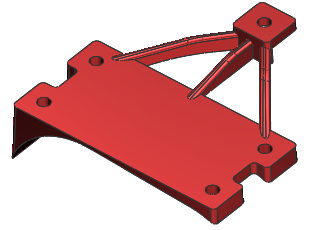
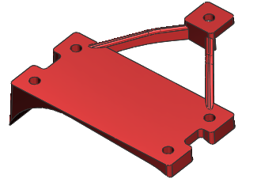

Open des18_85_case_mount_1.

Make sure that the Tools→Update→Interpart Update→Delay Geometry, Expressions, and PMI Update option is not selected.
Choose File→Save As, and name the part case_mount_3.
In the Part Navigator, right-click Linked Part Module and choose Expand All.
In the Inputs collector, double-click Linked Face (4).
In the WAVE Geometry Linker dialog box, in the Parent Information group, notice that the Parent Part is des18_85_case_transmission.
Even though the parent, case_transmission part file does not know about its children, the children know their parents. This is because case_mount_3 was saved from the original case_mount_1.
In the WAVE Geometry Linker dialog box, click Cancel.
In the Work collector, delete Extrude (10), and click OK in the Notification message box.
The center strengthening rib is deleted.

On the Standard toolbar click, Save .